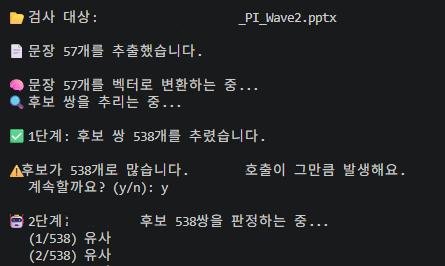
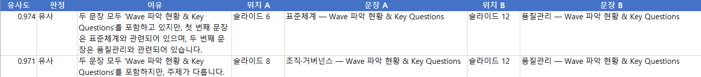

클라이언트의 요구사항 변경!
클라이언트(아내)에게 개발 진행 상황 및 결과를 전달하던 과정에서 갑자기 새로운 요구사항을 전달받게 되었다.
파일 보안 때문에 로컬에서 작업할 수 있어야 해!
뭐야! 그런 말 없었잖아!!
지금까지 Claude API를 사용해서 개발하던 방향성을 틀어야 했다.
로컬로 구현이 가능한지 알아보자 ‘Ollama’라는걸 찾게 되었다.
Ollama란 무엇인가?
복잡한 설치 과정없이 로컬 환경에서 LLM을 쉽게 실행할 수 있게 도와주는 오픈소스라고 한다. 특히 설치가 쉽기 때문에 초보자들이 사용하기 좋다고하여 선택하였다.
[Ollama의 장점]
- 프라이버시 보호
- 오프라인 사용
- 비용 절감
- 간편한 사용
[Ollama의 단점]
- 높은 컴퓨터 사양 요구(하드웨어 성능)
- AI 모델의 성능 한계
- 컴퓨터 자원 독점 및 발열
- 텍스트 위주의 기본 환경
Ollama 교체 작업
ollama.com 에서 윈도우용 설치 파일을 설치하면 된다.(백그라운드에서 도는 프로그램이라 특별히 실행할 필요는 없음.)
설치 이후에 ‘cmd’에서 모델을 받는다.
ollama pull qwen2.5:7b
[추천 받은 이유]
- qwen2.5 계열은 한국어를 잘함.
- 7b 사양 부담이 적당 함.
- 사양이 낮으면 ‘qwen2.5:3b’ 시작해도 되고 여유가 있으면 ‘qwen2.5:14b’ 품질을 올린다.
현재로 비교해 봤을때 Qwen3:8B도 추천받았다 이 2개의 모델을 비교해봤다.
[Qwen3:8B vs Qwen2.5:7B 비교표]
| 항목 | Qwen2.5 (7B) | Qwen3 (8B) |
|---|---|---|
| 추론 능력 | 준수함 (일상 대화용) | 매우 뛰어남 (복잡한 논리) |
| 한국어자연스러움 | 양호 | 매우 자연스러움 |
| 코딩 성능 | 우수함 | 최상급 (디버깅 특화) |
| 속도 (Response) | 빠름 | 유사함 (살짝 더 무거울 수 있음) |
| 메모리(RAM) 요구량 | 8GB 권장 | 8GB ~ 12GB 권장 |
| 특이 사항 | 안정적인 범용 모델 | Thinking(사고) 기능 지원 |
[요약 및 추천]
- Qwen2.5:7B: 지금 내 컴퓨터에서 가장 빠르고 가볍게 일상적인 대화나 간단한 텍스트 작업을 하고 싶을 때.
- Qwen3:8B: 코딩 보조, 복잡한 문제 해결, 더 똑똑한 한국어 작문 등 ‘성능’이 조금 더 중요할 때.
테스트를 진행해본다.
ollama run qwen2.5:7b "안녕, 한국어로 대답해줘"
한국어로 답변 받으면 준비 끝이다.
Ollama와 통신할 라이브러리를 설치한다.
pip install ollama
그 이후에 중복 체크 코드에 Claude 연관된 부분을 Ollama로 교체하였다.
[변경 이후 테스트 진행 결과]

중복체크 후
엑셀파일로 만들어 준다.조견표 만들어 보자!
슬라이드/페이지 단위로 행을 만들고, 각 행의 요약을 Ollama로 뽑는 조견표를 만들기로 했다.
ex>
| 파일명 | 위치 | 원문(일부) | 한 줄 요약 |
|---|---|---|---|
| 사업계획.pptx | 슬라이드 1 | 2024년 지원사업 추진계획… | 2024년 지원사업 전체 개요 |
| 사업계획.pptx | 슬라이드 2 | 재택근무는 주 3일까지… | 재택근무 운영 기준 안내 |
| 예산.pdf | 페이지 1 | 총 예산 15억원 편성… | 연간 예산 편성 내역 |
[조견표 만드는 코드]
"""
make_index.py — 폴더 안 모든 자료를 슬라이드/페이지 단위로 훑어
'조견표'(파일명·위치·원문·요약)를 엑셀로 만든다.
요약은 Ollama(로컬)로 생성한다. 인터넷 불필요.
실행: python make_index.py
"""
import os
os.environ["HF_HUB_DISABLE_SYMLINKS"] = "1"
import json
from pathlib import Path
from openpyxl import Workbook
from openpyxl.styles import Font, PatternFill, Alignment
import ollama
from rag import read_pptx, read_pdf, read_xlsx
# ──────────────────────────────────────────────────────────────
# 설정
# ──────────────────────────────────────────────────────────────
DATA_FOLDER = r"C:\llm-rag-qa\data" # 조견표로 만들 자료 폴더
OUTPUT_XLSX = r"C:\llm-rag-qa\조견표.xlsx"
OLLAMA_MODEL = "qwen2.5:7b"
LIMIT = 0 # 0이면 전체. 테스트할 땐 10 정도로 두면 앞 10개만 처리
MIN_CHARS = 15 # 이보다 짧은 블록은 요약 안 하고 원문만
def read_any(path):
"""확장자에 맞게 파일을 읽어 (블록리스트, 위치라벨)을 돌려준다."""
suffix = path.suffix.lower()
if suffix == ".pptx":
return read_pptx(path), "슬라이드"
elif suffix == ".pdf":
return read_pdf(path), "페이지"
elif suffix == ".xlsx":
return read_xlsx(path), "시트"
return None, None
def summarize(text):
"""Ollama로 한 줄 요약을 만든다."""
prompt = f"""다음 내용을 한국어로 짧게 한 줄(20자 내외) 요약해줘.
제목처럼 명사구로. 다른 말 붙이지 말고 요약만.
내용: {text[:1000]}"""
try:
response = ollama.chat(
model=OLLAMA_MODEL,
messages=[{"role": "user", "content": prompt}],
)
return response["message"]["content"].strip().replace("\n", " ")
except Exception as e:
return f"(요약 실패: {e})"
def save_to_excel(rows, path):
wb = Workbook()
ws = wb.active
ws.title = "조견표"
headers = ["파일명", "위치", "원문(일부)", "한 줄 요약"]
ws.append(headers)
for cell in ws[1]:
cell.font = Font(bold=True, color="FFFFFF", name="맑은 고딕")
cell.fill = PatternFill("solid", start_color="4472C4")
cell.alignment = Alignment(horizontal="center", vertical="center")
for r in rows:
ws.append(r)
widths = [24, 12, 60, 30]
for col, w in enumerate(widths, start=1):
ws.column_dimensions[ws.cell(row=1, column=col).column_letter].width = w
for row in ws.iter_rows(min_row=2):
for cell in row:
cell.alignment = Alignment(vertical="top", wrap_text=True)
wb.save(path)
if __name__ == "__main__":
folder = Path(DATA_FOLDER)
print(f"📂 '{folder}' 폴더를 훑는 중...\n")
# 먼저 모든 블록을 모은다 (요약 전)
entries = [] # (파일명, 위치, 원문)
for path in folder.rglob("*"):
blocks, label = read_any(path)
if not blocks:
continue
for idx, block in enumerate(blocks, start=1):
block = block.strip()
if block:
entries.append((path.name, f"{label} {idx}", block))
print(f" ✅ {path.name} → {len(blocks)}개")
# 테스트용 제한
if LIMIT > 0:
entries = entries[:LIMIT]
print(f"\n (테스트 모드: 앞 {LIMIT}개만 처리)")
print(f"\n📄 총 {len(entries)}개 항목을 요약합니다. (시간이 걸려요)\n")
# 요약 달기
rows = []
for n, (fname, loc, text) in enumerate(entries, start=1):
if len(text) >= MIN_CHARS:
summary = summarize(text)
else:
summary = text[:20] # 너무 짧으면 요약 대신 원문
print(f" ({n}/{len(entries)}) {fname} {loc} → {summary}")
rows.append([fname, loc, text[:400], summary])
save_to_excel(rows, OUTPUT_XLSX)
print(f"\n💾 조견표를 저장했습니다: {OUTPUT_XLSX}")
-
read_any : 확장자를 보고 알맞은 읽기 함수로 보내주는 교통정리 함수, ’load_sentences’와 비슷한 역할 이지만 문장으로 쪼개지 않기 때문에 사용.
-
summarize : Ollama로 한줄 요약을 만드는 부분.
-
LIMIT : 후에 0으로 바꿔서 전체 요약하도록 해야한다. 지금은 품질 확인을 위해 앞에 10개만 요약해보도록 적용.
*항해 세번째날 갑자기 바람이 불지 않아 노 젓기 시작……. *